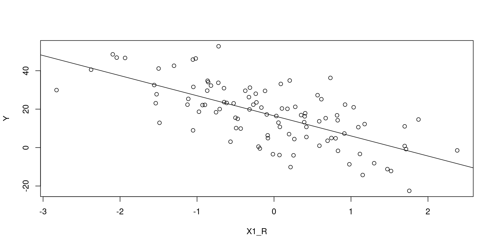
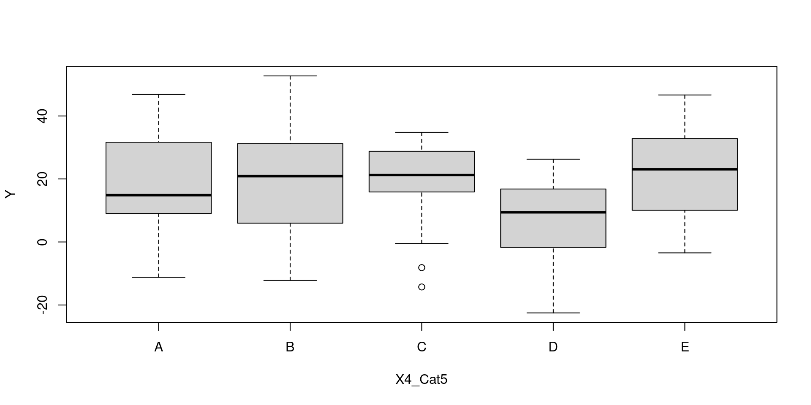
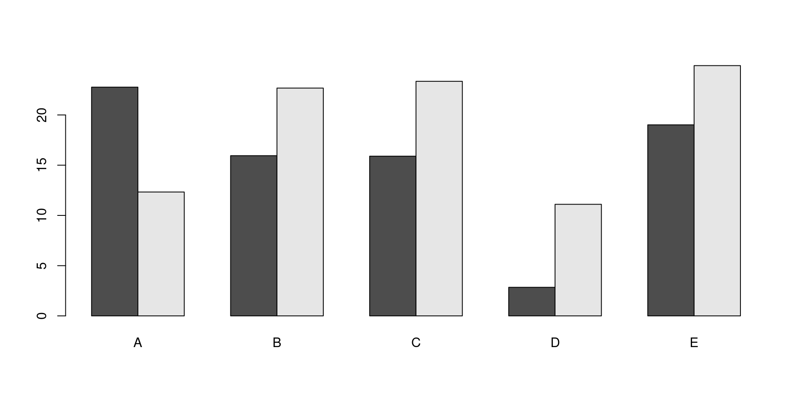
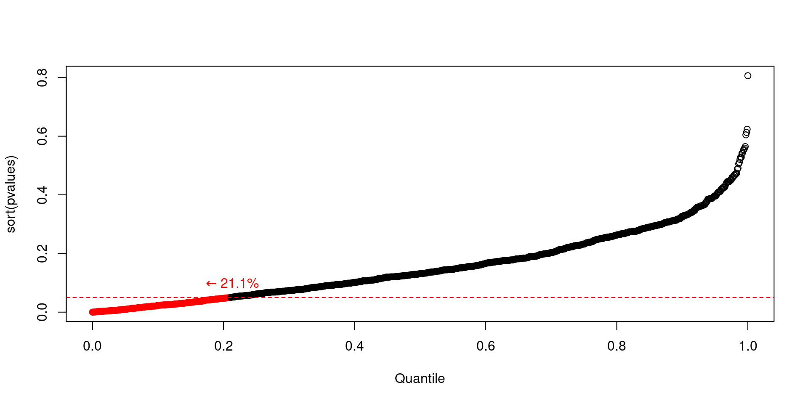
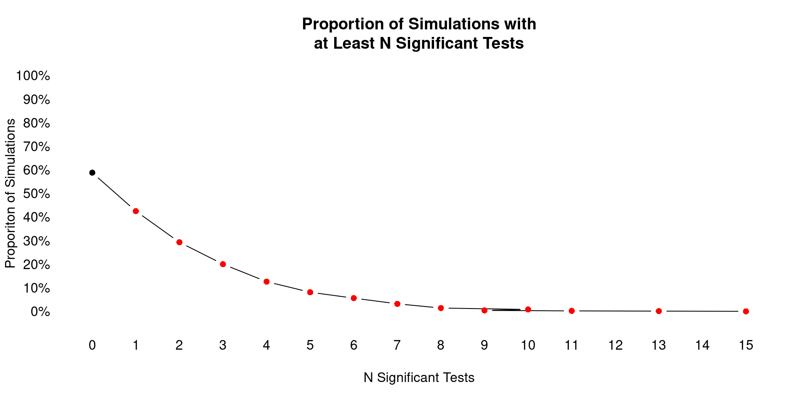
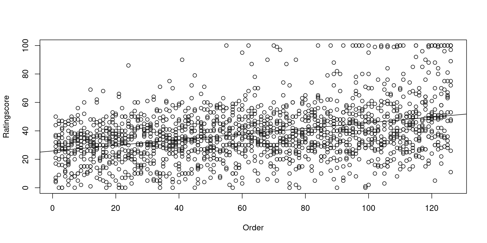

library(broom)
N <- 100
X1_R <- rnorm(N)
X2_R <- rnorm(N)
X3_Cat2 <- gl(2, N / 2, labels = c('On', 'Off')) |> sample()
X4_Cat5 <- gl(5, N / 5, labels = LETTERS[1:5])
sigma <- 10
Y <- 5.2 + 1 * X1_R +
-11.2 * X1_R +
as.integer(X3_Cat2) * 7.2 +
(contrasts(X4_Cat5) %*% c(c(1, 3, -10, 5)))[X4_Cat5] +
rnorm(N, 0, sigma)Null Hypothesis Significance Tests
Nat Condit-Schultz
Data Analysis
What is the goal of data analysis?
- To support valid research claims.
- To be rigorously skeptical about our data and our models of the data.
- Recognize assumptions made about data/models.
- Condiser alternative explanations of observed relationships.
- Try to disprove (falsify) your models.
- This is what reviewers expect.
Null Hypothesis Significance Tests
Motivation
- The standard approach to experimental statistics across many fields of research.
- A crucial opportunity to falsify your hypothesis.
- A validly-conducted “significant” test is (essentially) required to make a positive claim about your hypothesis.
Core Idea
- The Null Hypothesis (\(H_0\)), is that there are no true relationship between independent and dependent variable(s).
- Any apparent relationships1 may arise purely by random chance.
- If we claim a relationship is real when it is not we make a Type 1 error.
- NHST is a mechanism for limiting Type 1 errors.
Core Method
- Pick an “\(\alpha\) level” (acceptable Type 1 error rate).
- Just kidding; \(\alpha := 0.05\)
- Describe a statistical model of the relationship(s) between experimental variables.
- Usually a variant of the General Linear Model.
- \(\beta_0 + \beta_1X + \epsilon = Y\)
- Includes assumptions about distribution of residual error! (\(\epsilon\))
- Characterize the Null Hypothesis in the context of that model.
- Usually, something like \(H_0: \beta_1 = 0\).
- Gather data.
- Compute probability of observed data, or “more extreme” data, given \(H_0\).
- This is a \(p\) value.
- Evaluate:
- If \(p \leq \alpha\), then result is considered significant.
- Your research claim may be valid.
- If \(p > \alpha\), then result is not significant.
- Your research claim is falsified.
- (To argue otherwise will be an uphill battle.)
- Your research claim is falsified.
- If \(p \leq \alpha\), then result is considered significant.
Interpretation
Following this method assures that at most 5% of positive (significant) research claims are Type 1 errors.
- It does not…
- Prove anything, either way.
- Demonstrate that a relationship (effect) is strong, or important.
- Tell us about Type 2 errors.
Statistical Models
What does this look like in practice?
- Find a statistical model that can represent your independent and dependent variables.
DV ~ IV
- In fact, when you design your experiment in the first place, consider what statistical model to use.
There are many standard models/tests:
- For many, \(p\)-values can be computed trivially.
- Linear regression
- \(t\)-test
- ANOVA
- MANOVA
- Others require algorithmic “fitting” process (equivalent to “training” in ML).
- Logistic regression
- Multinomial regression
- Multi-level models
- All are variants of General Linear Model.
The appropriate statistical model/test depends on the type of DV and IVs you have.
DV ~ \(IV_1 + (+ IV₂ + … + IVₙ)\)
| \(IV_{k}\) | Model | Test Statistic | |
|---|---|---|---|
| \(\mathbb{R}^k\) | Linear regression | \(k=1 :\) “Simple” | \(t\) |
| \(k>1 :\) “Multiple” | \(t^k\) | ||
| \(\mathbb{Cat}\{2\}\) | \(t\)-test | \(t\) | |
| \(\mathbb{Cat}\{\geq 2\}^k\) | ANOVA | \(k=1 :\) “One-way” | \(F\) |
| \(k>1 :\) “{k}-way” | \(F^k\) | ||
| \(\mathbb{R}^* \times \mathbb{Cat}^*\) | ANCOVA | \(F^k\) |
- These models all assume a normally-distributed DV.
- Tests are based on \(t\) or \(F\) sampling distributions.
| \(DV_{k}\) | Model | Test Statistic | |
|---|---|---|---|
| \(\mathbb{Cat}\{2\}\) | Logistic regression | \(\mathbb{Cat}(IV) :\) “Logistic ANOVA” | \(\chi^2\) |
| \(\mathbb{Cat}\{>2\}\) | Multinomial regression | \(\chi^2\) |
- In these models, a latent linear variable is mapped to discrete categories.
- Evaluated using log-likelihood ratio test.
| \(DV_{k}\) | Model | Test Statistic |
|---|---|---|
| \(\mathbb{Ord}\{>2\}\) | Ordinal logit regression | \(\chi^2\) |
| \(\mathbb{Cat}\{>2\}\) | Oridnal probit regression | \(\chi^2\) |
- In these models, a latent linear variable is mapped to ordinal categories.
- Evaluated using log-likelihood ratio test.
Examples
Fake Data

# A tibble: 2 × 5
term estimate std.error statistic p.value
<chr> <dbl> <dbl> <dbl> <dbl>
1 (Intercept) 15.2 1.25 12.2 2.49e-21
2 X1_R -9.92 1.28 -7.76 8.03e-12# A tibble: 2 × 5
term estimate std.error statistic p.value
<chr> <dbl> <dbl> <dbl> <dbl>
1 (Intercept) 11.3 2.15 5.27 0.000000820
2 X3_Cat2Off 8.97 3.04 2.95 0.00393 
# A tibble: 2 × 6
term df sumsq meansq statistic p.value
<chr> <int> <dbl> <dbl> <dbl> <dbl>
1 X4_Cat5 4 3094. 773. 3.42 0.0117
2 Residuals 95 21489. 226. NA NA 
# A tibble: 4 × 6
term df sumsq meansq statistic p.value
<chr> <int> <dbl> <dbl> <dbl> <dbl>
1 X3_Cat2 1 2009. 2009. 9.67 0.00251
2 X4_Cat5 4 3363. 841. 4.05 0.00461
3 X3_Cat2:X4_Cat5 4 511. 128. 0.615 0.653
4 Residuals 90 18700. 208. NA NA Quality Evaluation Data
- The “omnibus” Null Hypothesis would be that nine algorithms perform equally well.
- This doesn’t appear to be the cases, but our skeptical minds must ask whether this spread could happen by chance.
This is a “basic” one-way ANOVA.
Analysis of Variance Table
Response: Ratingscore
Df Sum Sq Mean Sq F value Pr(>F)
Condition 8 178962 22370.2 80.353 < 2.2e-16 ***
Residuals 1755 488590 278.4
---
Signif. codes: 0 '***' 0.001 '**' 0.01 '*' 0.05 '.' 0.1 ' ' 1- As we suspected, the omnibus Null Hypothesis does not seem very plausible.
However, in typical MIR projects, asking whether all the algorithms perform the same wouldn’t really be the thing that interests us.
We’d be more likely to want to know whether a particular algorithm performs better than the other algorithms, or better than a the previous “best” algorithm.
If we wanted to compare the latest algorithm (34) to the previous iteration (32), we can reduce this to a \(t\)-test.
- The Null Hypothesis is that the performance of Algo32 and Algo34 is the same.
Call:
lm(formula = fit)
Residuals:
Min 1Q Median 3Q Max
-23.398 -9.398 0.602 7.816 42.602
Coefficients:
Estimate Std. Error t value Pr(>|t|)
(Intercept) 23.3980 0.9173 25.507 <2e-16 ***
ConditionAlgo34 -0.2143 1.2973 -0.165 0.869
---
Signif. codes: 0 '***' 0.001 '**' 0.01 '*' 0.05 '.' 0.1 ' ' 1
Residual standard error: 12.84 on 390 degrees of freedom
Multiple R-squared: 6.996e-05, Adjusted R-squared: -0.002494
F-statistic: 0.02728 on 1 and 390 DF, p-value: 0.8689- Two things to notice:
- Algorithm 34 actually has slightly lower performance on average (
-.2143). - However, the test is not significant, so the Null Hypothesis cannot be rejected.
- We would not conclude that Algorithm 34 is worse than Algorithm 32.
- Algorithm 34 actually has slightly lower performance on average (
Perhaps we’d like to know whether the best performing algorithm (22) is really better than the second best (30)?
Call:
lm(formula = fit)
Residuals:
Min 1Q Median 3Q Max
-36.673 -12.673 -3.673 8.327 53.102
Coefficients:
Estimate Std. Error t value Pr(>|t|)
(Intercept) 51.673 1.303 39.654 < 2e-16 ***
ConditionAlgo30 -4.776 1.843 -2.591 0.00992 **
---
Signif. codes: 0 '***' 0.001 '**' 0.01 '*' 0.05 '.' 0.1 ' ' 1
Residual standard error: 18.24 on 390 degrees of freedom
Multiple R-squared: 0.01693, Adjusted R-squared: 0.01441
F-statistic: 6.715 on 1 and 390 DF, p-value: 0.00992Perhaps we’d like to know whether the best performing algorithm (22) is really better than the rest of the algorithms?
Call:
lm(formula = fit)
Residuals:
Min 1Q Median 3Q Max
-36.79 -11.01 -1.79 9.21 63.21
Coefficients:
Estimate Std. Error t value Pr(>|t|)
(Intercept) 36.7902 0.4771 77.11 <2e-16 ***
BestAlgoTRUE 14.8833 1.4314 10.40 <2e-16 ***
---
Signif. codes: 0 '***' 0.001 '**' 0.01 '*' 0.05 '.' 0.1 ' ' 1
Residual standard error: 18.89 on 1762 degrees of freedom
Multiple R-squared: 0.05781, Adjusted R-squared: 0.05728
F-statistic: 108.1 on 1 and 1762 DF, p-value: < 2.2e-16- This is significant.
- However, there is a problem…
- We did not identify this “best algorithm” a priori.
- And the NHST is sensitive to this.
Imagine that the Null Hypothesis were true: all algorithms performed equally well.
- Every time we sample responses, one algorithm will perform best in the sample.
- By picking this one out, we are (by definition) biasing the result.
We can simulate this.
NHST pitfalls
In general, NHST is sensitive to the exact procedure you use.
- Any procedural decisions made post-hoc and affect the validity of results.
- I.e., if you use the data to to make decisions about stats/tests.
- Stopping condition
- When you stop collecting data.
- Which comparisons you make.
Multiple tests
A particularly well known problem is the problem of multiple tests.
- Anytime you conduct multiple NHSTs, the chance that at least one test will be significant is higher than \(\alpha\).
A common technique is to conduct “pair-wise” \(t\)-tests between every category, so we would know exactly which algorithms perform better than others.

- In this case there would be 36 possible comparisons.
If we simulate this
- More than forty percent of our (Null Hypothesis) simulations have at least one significant tests.
- This is the “family-wise error rate”
- This, if we conducted 36 significance tests and consider one significant result to be the basis to reject the Null Hypothesis, we would make a Type 1 error more than 40% of the time!
Correcting for Multiple Comparisons
We can “correct” for multiple tests by adjusting our \(p\)-values (or \(\alpha\) level) accordingly.
- The naive Bonferroni correction is simply to use \(\frac{\alpha}{T}\), where \(T\) is the number of tests.
- This highly conservative (overly cautious), because our tests are not statistically independent from each other.
- There are many other approachess, such as Tukey’s Method.
The main lesson is that, whenever you conduct multiple NHST tests, you need to take them with an extra skeptical grain of salt.
- If you conduct many tests (like hundreds or thousands), some of those will have \(p < .05\).
Data Independence
All statistical models assume that each individual data point is statistically independent of every other data point.
- This assumption is often violated in experimental research.
Repeated measures
The most common source of data dependence is repeated measures:
- Repeated measurements from the same human participants.
- Repeated responses to the same stimuli (“items”).
Take a look at your quality ratings again:
By participant
- Participant 62 tends to give much higher ratings than participant 45.
By item
- Again, the specific measurement items vary quite a lot in average rating, across all algorithms.
In a well-designed experiment like this, every combination of all levels is measured.
- I.e., every participant heard every item processed by every algortithm.
- This “full factorial” design minimized the impact of data dependence on our results.
- However, fully-factorial designs are not always feasible.
Even in a fully-factorial design, data dependence can be problematic.
- If I inspect five data points from a given participant, I can use that data to guess what their other data points will be.
- Thus, each individual data point communicates less information.
- Thus, the amount of information in the data is actually less than the apparent sample size.
- This can make statistical models underestimate the true uncertainty of estimated statistics.
Random-Effects Models
A generalized solution the problem of data dependence is through random effects models.
- In these models, multiple sources of random error are explicitely modeled:
- A random sample of participants.
- A random sample of measurement items.
- Within participants/items, random residual error.
- We can represent:
- variation in baselines between participants/items using random intercepts.
- variation in the effects of independent variables using random slopes.
- We can use the
lme4package to fit random-effects models for various versions of the GLM.
We can thus conduct a best-practice version of our omnibus ANOVA test.
- The difference between algorithm ratings is still statistically significant.
- The \(F\) statistic for this new model (\(F \approx 10\)) is much smaller than for the naive ANOVA we conducted earlier (\(F \approx 80\)), because this model more accurately reflects the true uncertainty in the data.
- We’ve been good skeptics!
Non-random dependence
Another possibility is for data-dependence to be non-random.
For example, we might look at how participants’ ratings evolved over the course of their experimental session and see something like:

- Participants’ ratings tended to get higher over time!1
- The data is autocorrelated, with $r =$0.26 at lag 1.
- As before, it means each data point contains less unique information, because they can be predicted from past ratings.
We an explicitly incorporate this autocorrelation into our model:
# A tibble: 3 × 6
term df sumsq meansq statistic p.value
<chr> <int> <dbl> <dbl> <dbl> <dbl>
1 Condition 8 175491. 21936. 84.5 2.38e-118
2 PreviousRating 1 33832. 33832. 130. 3.70e- 29
3 Residuals 1740 451732. 260. NA NA Effect Size
A statistically significant effect tells us nothing about how strong an effect is.
- With enough data (or little variability) even small effects can be significant.
Effect size should be reported independently of statistical tests.
- Use graphs to visualize effect size in meaningful way.
- Report standardized metrics:
- \(r\), \(R^2\), \(\beta\), coefficient of variation, Coen’s \(d\)
- Report non-standardized metrics:
- \(b\)
Do not use \(p\) values as effect-size metrics.
- \(p < .01\), \(p < .001\), \(p < .0000001\), etc.
- This is a common practice, but \(p\) values are bad inferential statistics, and bad measures of effect size.
Summary
- NHST is important first step in evaluating experimental results
- Find model appropriate for your variables
- Look out for dependent data
- Incorporate random effects to account fo repeated measures.
- Explicitely model other sources of dependence.
- Post-hoc
- Do not make decisions based on data.
- Stopping condition
- Post-hoc comparisons
- Correct for multiple tests
- Do not make decisions based on data.
ISMIR 2024: Humans at the Center of MIR — Null Hypothesis Significance Tests